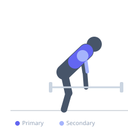
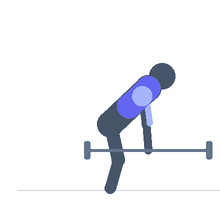

Exercise guide / Pendlay Row
Pendlay Row
The Pendlay row is a strict barbell rowing variation where the bar returns to the floor between every repetition. The dead-stop start eliminates momentum and forces a more explosive concentric contraction of the upper back musculature. With the torso held parallel to the floor, the rhomboids, middle and lower trapezius, and latissimus dorsi are heavily loaded through a full range of motion.
Primary muscles
latissimus dorsi
rhomboid major
trapezius middle
Secondary muscles
trapezius lower
deltoid posterior
biceps brachii long head
Stabilizers
erector spinae
transverse abdominis
Equipment
Standard Barbell
Optional
Lifting Straps


Starting position
- Stand over a barbell with feet hip-width apart and the bar over mid-foot. Hinge to grip the bar with an overhand grip slightly wider than shoulder-width. The torso must be parallel or near-parallel to the floor. The bar rests on the floor at the start of every rep.
Setup
- Set up exactly as you would for a conventional deadlift but set the torso to horizontal. Use a pronated grip. Bumper plates are helpful so the bar drops safely to the floor each rep.
Steps
- Step 1: Begin with the bar on the floor, torso parallel to the ground, arms extended.
- Step 2: Take a breath and brace the core hard.
- Step 3: Explosively row the bar toward the lower chest or upper abdomen by driving the elbows up and back.
- Step 4: At the top, squeeze the scapulae together fully.
- Step 5: Lower the bar all the way to the floor in a controlled manner and allow it to come to a complete stop before the next rep.
Coaching cues
- Torso parallel to the floor the entire set — if it rises, the weight is too heavy
- Think of the row as a 'jump' for your upper back
- Every rep starts from zero — no rebound
Breathing
- Inhale and brace before each rep. Exhale after the bar makes contact with the floor.
Range of motion
- Full dead-stop at the bottom to full scapular retraction at the top. No partial reps.
Tempo
- Explosive concentric (as fast as possible under control), controlled 2s eccentric, full stop between reps.
Common mistakes
- Bouncing the bar off the floor instead of achieving a true dead stop
- Raising the torso to assist the row, reducing back stimulus and stressing the lower back
- Not reaching full scapular retraction at the top of each rep
Safety
- The strict horizontal torso position places significant demand on the erector spinae — do not perform when lower back is fatigued
- Use bumper plates if possible to protect the floor and bar
Training
- strength: 3–6 reps
- hypertrophy: 6–10 reps
- strength: 4–6 sets
- hypertrophy: 3–5 sets
- Rest: {'strength': 180, 'hypertrophy': 120}